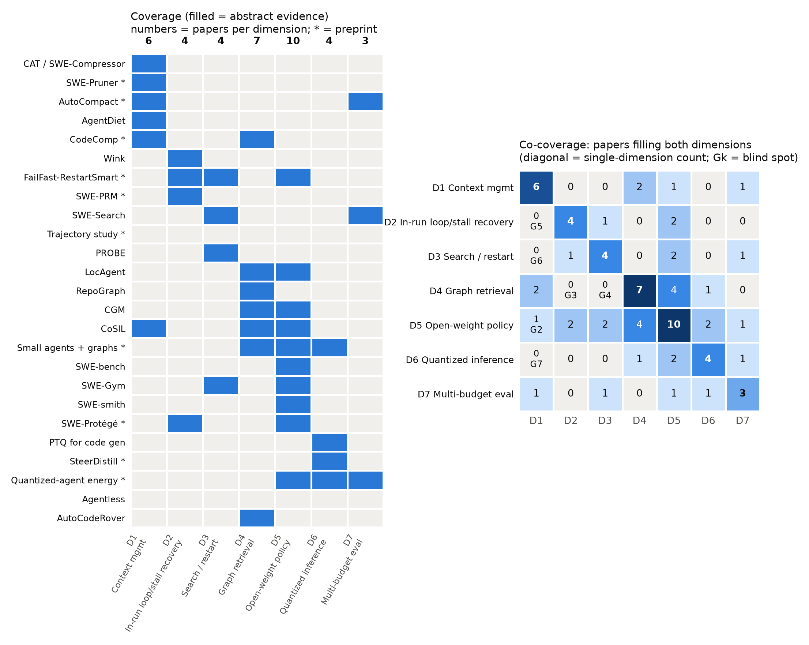
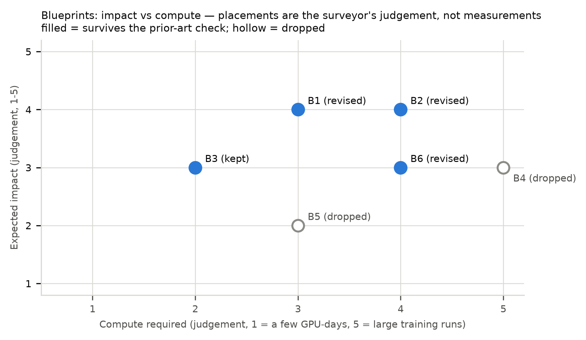

scripts/analyze.py. As a cross-check, regex rules for each dimension were run over all 172 retrieved records that mention SWE-bench or issue resolution (“pool” columns).1. Context management became a trained policy. Six of 25 retained papers manage the agent's context during a run (D1). The 2025–26 work moves the decision of when and what to compact into the policy itself: CAT / SWE-Compressor [W7117557793] trains a model that compacts at milestones and reports 57.6% on SWE-bench Verified; AutoCompact [W7215726049] trains when to compact and reports +9.2 points on SWE-bench Verified, holding at 256K and 16K windows. Pruning methods cut tokens with equal or better success: 23–54% fewer tokens (SWE-Pruner [W7125680675]), 39.9–59.7% fewer input tokens (AgentDiet [W4415332588]). CodeComp [W7154351780] prunes the KV cache with code-property-graph priors, the only retained paper joining D1 to a code graph at the inference layer.
2. Loop and stall recovery is moving online. Four papers intervene while the episode runs (D2). Wink [W7167425954] reports misbehaviours, loops among them, in about 30% of production trajectories; SWE-PRM [W4416711632] raises SWE-bench Verified resolution from 40.0% to 50.6% with a process reward model that course-corrects mid-run; FailFast-RestartSmart [W7172523833] predicts failure from trajectory prefixes with a 0.6B monitor and restarts (66.6% → 71.8% for Qwen3.6-27B); SWE-Protégé [W7131676563] trains a 7B model to recognise stalled states and reaches 42.4% Pass@1. Trajectory study [W4415935825] gives the motivating observation: failed trajectories are longer and more variable, and 72–81% of trajectories locate the right file even when they fail.
3. Search and restart are the main alternatives to fixing a run in place. D3 covers MCTS (SWE-Search [W4404342086], 23% relative gain across five models), verifier-ranked rollouts (SWE-Gym [W4405957747]), restart (FailFast-RestartSmart [W7172523833]) and between-attempt recovery guidance (PROBE [W7160926458]).
4. Graph-guided retrieval is well developed for localization. D4 is the second-most covered dimension (7 papers). LocAgent [W4415101712] reaches 92.7% file-level localization with a fine-tuned 32B model; CoSIL [W7125926949] reports 43.3% / 44.6% Top-1 function localization on SWE-bench Lite / Verified with a 32B model; CGM [W4416453608] puts the graph into attention and reaches 43.00% on SWE-bench Lite with Qwen2.5-72B. Small agents + graphs [W7223971351] measures the gain for small models: structured tools add 17–21 points at 1.7–4B and 4–5 points at 32B, and agents chain graph expansions in only 12–14% of episodes.
5. Open-weight policies are common; quantized ones are rare. D5 is the most covered dimension (10 papers, from SWE-Llama in SWE-bench [W4387561453] to SWE-agent-LM-32B at 40.2% in SWE-smith [W4417525566]). Reduced precision (D6) appears in 4 papers, and only 2 of them evaluate on a repository-repair task: an FP8 control in Small agents + graphs [W7223971351] and energy per completed task at 4 and 8 bits in Quantized-agent energy [W7223657872], which finds 4-bit can use up to 3.5× the energy per completed task. Off-agent evidence points the other way for single-turn code generation: 4-bit post-training quantization shows no significant loss there (PTQ for code gen [W7171740466]), while SteerDistill [W7225790577] finds quantized agents “overlook task requirements” and recovers most of the gap with teacher steering (within one point of BF16 at W4A16).
6. Budgets are rarely varied. Only 3 papers report results at two or more explicit resource budgets (AutoCompact [W7215726049], SWE-Search [W4404342086], Quantized-agent energy [W7223657872]). Most report a single scaffold configuration, so the interaction between budget caps and the failure modes in themes 1–2 is mostly unmeasured.
| ID | Dimension | Coding rule | Papers | …with repo-repair eval | Pool (regex, of 172) |
|---|---|---|---|---|---|
| D1 | Context mgmt | Active context management: the system compacts, prunes or reduces the agent's trajectory or KV cache during a run | 6 | 5 | 24 |
| D2 | In-run loop/stall recovery | In-run loop/stall/failure detection with intervention while the episode is still running | 4 | 3 | 21 |
| D3 | Search / restart | Search, backtracking or restart across trajectories (tree search, reranked rollouts, fresh restart) | 4 | 3 | 6 |
| D4 | Graph retrieval | Graph- or structure-guided repository retrieval/localization (code graph, call graph, AST, CPG) | 7 | 7 | 12 |
| D5 | Open-weight policy | Open-weight policy model evaluated on a repository task, named in the abstract | 10 | 10 | 45 |
| D6 | Quantized inference | Reduced-precision (8-bit or lower) inference evaluated | 4 | 2 | 1 |
| D7 | Multi-budget eval | Results reported at two or more explicit resource budgets (context window, turns, tokens, time, compute) | 3 | 3 | 15 |

No dimension has ≤ 2 studies across all 25 papers (minimum: D7 with 3), so the single-dimension rule alone yields no gap. Two extensions were applied, both computed: (a) the same rule restricted to the 21 papers with a repository-repair evaluation, and (b) dimension pairs with ≤ 2 papers, ranked by shortfall against the count expected if the two dimensions were independent (expected = na·nb/25; a ranking heuristic, not a statistical test). The pool column re-counts each gap over all 172 SWE-related retrieved records with regex rules; it is coarse (keyword matches, no reading) and shows where the retained set understates prior work.
| Gap | Observed | Expected if independent | Pool (regex) | Evidence (paper IDs) | |
|---|---|---|---|---|---|
| G1 | D6 Quantized inference Studies with this dimension that also evaluate on a repository-repair task | 2 | — | 1 | Small agents + graphs [W7223971351], Quantized-agent energy [W7223657872] Marginals — D6: W7223971351, W7171740466, W7225790577, W7223657872 |
| G2 | D1 Context mgmt × D5 Open-weight policy Retained papers filling both dimensions | 1 | 2.4 | 5 | CoSIL [W7125926949] Marginals — D1: W7117557793, W7125680675, W7215726049, W4415332588, W7154351780, W7125926949; D5: W7172523833, W4415101712, W4416453608, W7125926949, W7223971351, W4387561453, W4405957747, W4417525566, W7131676563, W7223657872 |
| G3 | D2 In-run loop/stall recovery × D4 Graph retrieval Retained papers filling both dimensions | 0 | 1.12 | 3 | none in retained set Marginals — D2: W7167425954, W7172523833, W4416711632, W7131676563; D4: W7154351780, W4415101712, W4404087993, W4416453608, W7125926949, W7223971351, W4402442868 |
| G4 | D3 Search / restart × D4 Graph retrieval Retained papers filling both dimensions | 0 | 1.12 | 2 | none in retained set Marginals — D3: W7172523833, W4404342086, W7160926458, W4405957747; D4: W7154351780, W4415101712, W4404087993, W4416453608, W7125926949, W7223971351, W4402442868 |
| G5 | D1 Context mgmt × D2 In-run loop/stall recovery Retained papers filling both dimensions | 0 | 0.96 | 3 | none in retained set Marginals — D1: W7117557793, W7125680675, W7215726049, W4415332588, W7154351780, W7125926949; D2: W7167425954, W7172523833, W4416711632, W7131676563 |
| G6 | D1 Context mgmt × D3 Search / restart Retained papers filling both dimensions | 0 | 0.96 | 1 | none in retained set Marginals — D1: W7117557793, W7125680675, W7215726049, W4415332588, W7154351780, W7125926949; D3: W7172523833, W4404342086, W7160926458, W4405957747 |
| G7 | D1 Context mgmt × D6 Quantized inference Retained papers filling both dimensions | 0 | 0.96 | 0 | none in retained set Marginals — D1: W7117557793, W7125680675, W7215726049, W4415332588, W7154351780, W7125926949; D6: W7223971351, W7171740466, W7225790577, W7223657872 |
Reading the gaps. G1 and G7 hold in both the retained set and the pool: across 172 SWE-related records, the regex finds reduced precision in 1 and its overlap with context management in 0. G3–G6 are empty in the retained set but have 1–3 pool hits each. The prior-art check (Section 4) read those hits: LingmaAgent [W4413267850] already pairs a repository knowledge graph with MCTS (G4), and CAPYBALA [W7225137459, preprint] couples loop detection with context pruning (G5, G6). Those gaps are therefore thin, not empty. G2 (context management × open-weight policy) is understated by the abstract-only coding, since several context-management papers train open models without naming them in the abstract.
Six designs were drafted against G1–G7, and 18 OpenAlex queries (three per blueprint) were run for prior art. Closest hits were read at abstract level.
| Design | Prior-art search and verdict | |
|---|---|---|
| B1 revised | Precision as an experimental variable for repository-repair agents Run one open-weight policy at BF16, FP8 and W4A16 on SWE-bench Verified under identical scaffold, turn and context limits; paired per-task comparison (exact McNemar), plus loop incidence (repeated identical edits / test runs), compaction events and tokens per resolved task. Targets G1, G7 | Searched (OpenAlex, from 2023): “quantization coding agent SWE-bench resolve rate precision”; “4-bit quantized model software engineering agent repository repair”; “quantized LLM agent looping repeated actions” Closest: Quantized-agent energy [W7223657872], Understanding the Energy Cost of Quantized Agents on Shared … (2026) [W7225097464], SteerDistill [W7225790577] Closest hits measure energy per completed task across 4/8-bit precision (W7223657872: 29 tasks, includes repository bug fixing; W7225097464: shared GPUs, '49%' more energy per verified completion at 4-bit) and quantization-aware distillation on non-repair agent benchmarks (W7225790577). None reports resolve rate and failure-mode mix on a SWE-bench split by precision. Revised: energy angle dropped; focus on failure attribution. |
| B2 revised | Recovery-action factorial: continue vs prune vs reset vs restart at equal token budget On trajectories that a fixed trigger flags as stalled, branch the same state into four recovery actions (continue, prune stale observations, rebuild context from issue + localized code + current diff, fresh restart) and compare resolution at equal remaining token budget, crossed with BF16 vs W4A16. Targets G5, G7 | Searched (OpenAlex, from 2023): “context reset recovery coding agent loop”; “counterfactual context rebuild agent stuck repeated failure”; “context pruning loop avoidance backtracking coding agent” Closest: CAPYBALA: Context-Aware Pruning for Yielding and Backtrack-A… (2026) [W7225137459], Beyond Planning: Sparse Context Reset for Long-Horizon GUI A… (2026) [W7224565369], Continue or Restart? The Limits of Early Failure Prediction … (2026) [W7224136922] CAPYBALA (W7225137459, preprint) already couples loop detection with context pruning on 200 replayed SWE-bench runs; SCOR (W7224565369) shows context reset helps GUI agents; W7224136922 finds within-task early failure prediction near chance (AUC 0.50). Original 'context reset as loop breaker' is covered; revised to a branch-from-same-state factorial that separates the recovery action from the trigger, and adds precision as a factor. |
| B3 kept | Graph-coverage stall signals Detect stalls from the code graph rather than from text: no new graph node visited in k steps, repeated edits to the same node, or edits outside the localized k-hop neighbourhood; intervene by proposing the nearest unvisited neighbour. Evaluate detection precision/recall against labelled loop episodes and end-to-end resolve rate. Targets G3 | Searched (OpenAlex, from 2023): “code graph loop detection coding agent”; “repository graph coverage agent exploration stall”; “graph-guided recovery issue resolution agent” Closest: SWE-Adept: An LLM-Based Agentic Framework for Deep Codebase … (2026) [W7133343802], LoopsBench: From Harness Engineering to Loop Engineering in … (2026) [W7172416829] SWE-Adept (W7133343802) traverses code dependencies by agent-directed DFS and keeps code-state checkpoints, but does not use the graph as a stall detector; LoopsBench (W7172416829) uses task-dependency DAGs for evaluation, not code graphs for recovery. No hit found that uses graph coverage to detect loops. Kept. |
| B4 dropped | Tree search over graph localization hypotheses MCTS where branches are alternative graph-localized edit sites. Targets G4 | Searched (OpenAlex, from 2023): “Monte Carlo tree search repository knowledge graph issue resolution”; “backtracking over code graph localization hypotheses agent”; “tree search localization candidates SWE-bench” Closest: Alibaba LingmaAgent: Improving Automated Issue Resolution vi… (2025) [W4413267850], Monte Carlo Tree Search for Execution-Guided Program Repair … (2026) [W7127409208] Covered: LingmaAgent (W4413267850, DOI 10.1145/3696630.3728549) condenses the repository into a knowledge graph and explores it with MCTS on SWE-bench Lite; CodePilot (W7127409208) combines hierarchical localization with MCTS over patch trajectories. Dropped. |
| B5 dropped | Restart seeded with a compacted summary of the failed attempt On failure, restart a fresh rollout seeded with a compacted record of the failed attempt. Targets G6 | Searched (OpenAlex, from 2023): “restart with summary of failed attempt coding agent”; “compaction restart software engineering agent trajectory”; “learning from failed attempt memory SWE agent retry” Closest: FailFast-RestartSmart [W7172523833], Continue or Restart? The Limits of Early Failure Prediction … (2026) [W7224136922] Covered: FailFast-RestartSmart (W7172523833) restarts a same-policy rollout with the interrupted diff as an optional overlay (66.6% -> 71.8% on SWE-bench Verified with Qwen3.6-27B); W7224136922 studies continue-vs-restart decisions on 147,002 traces. Dropped. |
| B6 revised | Compaction policy x precision x window for small open-weight agents Factorial over compaction policy (none / fixed-threshold / model-invoked), weight precision (BF16 / W4A16) and context window (16K / 32K) for <=32B open-weight policies on SWE-bench Verified; report resolve rate, information loss (issue and file-path recall after compaction) and tokens per resolved task. Targets G2, G7 | Searched (OpenAlex, from 2023): “context compaction small language model coding agent”; “context management 7B open-weight SWE agent small context window”; “context window size ablation SWE-bench small model” Closest: Bud ContextCompact 2.0: Context Compaction for Agent Success… (2026) [W7223050698], Self-Compacting Language Model Agents (2026) [W7165634532], AutoCompact [W7215726049] Compaction for small models and constrained windows is covered: Bud ContextCompact 2.0 (W7223050698: 1.2B/9B/27B, 16K budget, SWE-bench Verified 41% -> 53% on long sessions), SelfCompact (W7165634532), AutoCompact (W7215726049: 256K and 16K windows). None crosses compaction with weight precision. Revised to the precision factor. |

Coding uses abstracts only; a capability present in a paper's body but absent from its abstract is coded empty, which biases counts downward (most visibly for D5 and D7). The retained set was chosen by one reader; the pool cross-check is the guard against that choice. arXiv returned records for 9 of 18 queries because of rate limiting, so arXiv-only preprints are under-sampled; OpenAlex returned arXiv-hosted records in every facet, but its arXiv coverage was not measured. Many retained and prior-art records are 2026 preprints without peer review; they are tagged. Reported metrics are quoted from abstracts and were not re-derived.
| Short | Title · venue | IDs | Venue source |
|---|---|---|---|
| CAT / SWE-Compressor | Context as a Tool: Context Management for Long-Horizon SWE-Agents Shukai Liu et al., 2025 · Findings of the Association for Computational Linguistics: ACL 2026 | W7117557793 arXiv:2512.22087 10.18653/v1/2026.findings-acl.1032 | Crossref search_crossref_by_title (similarity 1.00) |
| SWE-Pruner | SWE-Pruner: Self-Adaptive Context Pruning for Coding Agents Yuhang Wang et al., 2026 · arXiv (Cornell University) [preprint] · PREPRINT | W7125680675 arXiv:2601.16746 10.48550/arxiv.2601.16746 | OpenAlex only |
| AutoCompact | AutoCompact: Learning When to Compact Context in Long-Horizon Coding Agents Xuan Zhang et al., 2026 · arXiv (Cornell University) [preprint] · PREPRINT | W7215726049 arXiv:2610.02163 10.48550/arxiv.2610.02163 | OpenAlex only |
| AgentDiet | Reducing Cost of LLM Agents with Trajectory Reduction Yuan-an Xiao et al., 2026 · Proceedings of the ACM on Software Engineering | W4415332588 10.1145/3797084 | Crossref verify_doi_metadata |
| CodeComp | CodeComp: Structural KV Cache Compression for Agentic Coding Qiujiang Chen et al., 2026 · arXiv (Cornell University) [preprint] · PREPRINT | W7154351780 arXiv:2604.10235 10.48550/arxiv.2604.10235 | OpenAlex only |
| Wink | Wink: Recovering from Misbehaviors in Coding Agents Rahul Nanda et al., 2026 · Proceedings of the 3rd ACM International Conference on AI-Powered Software | W7167425954 10.1145/3805760.3814911 | Crossref verify_doi_metadata |
| FailFast-RestartSmart | Fail-Fast, Restart-Smart: Early Failure Prediction and Restart for SWE Agentic Tasks Chenyu Wang et al., 2026 · arXiv (Cornell University) [preprint] · PREPRINT | W7172523833 arXiv:2608.03222 10.48550/arxiv.2608.03222 | OpenAlex only |
| SWE-PRM | When Agents go Astray: Course-Correcting SWE Agents with PRMs Gandhi, Shubham et al., 2025 · arXiv (Cornell University) [preprint] · PREPRINT | W4416711632 arXiv:2509.02360 10.48550/arxiv.2509.02360 | OpenAlex only |
| SWE-Search | SWE-Search: Enhancing Software Agents with Monte Carlo Tree Search and Iterative Refinement Antonis Antoniades et al., 2024 · ICLR 2025 | W4404342086 arXiv:2410.20285 10.48550/arxiv.2410.20285 | WebSearch: https://openreview.net/forum?id=G7sIFXugTX |
| Trajectory study | Understanding Code Agent Behaviour: An Empirical Study of Success and Failure Trajectories Oorja Majgaonkar et al., 2025 · arXiv (Cornell University) [preprint] · PREPRINT | W4415935825 arXiv:2511.00197 10.48550/arxiv.2511.00197 | OpenAlex only |
| PROBE | Debugging the Debuggers: Failure-Anchored Structured Recovery for Software Engineering Agents Chenyu Zhao et al., 2026 · Proceedings of the 41st IEEE/ACM International Conference on Automated Software Engineering | W7160926458 10.1145/3832783.3834492 | Crossref verify_doi_metadata |
| LocAgent | LocAgent: Graph-Guided LLM Agents for Code Localization Zhaoling Chen et al., 2025 · Proceedings of the 63rd Annual Meeting of the Association for Computational Linguistics (Volume 1: Long Papers) | W4415101712 arXiv:2503.09089 10.18653/v1/2025.acl-long.426 | Crossref search_crossref_by_title (similarity 1.00) |
| RepoGraph | RepoGraph: Enhancing AI Software Engineering with Repository-level Code Graph Siru Ouyang et al., 2024 · ICLR 2025 | W4404087993 arXiv:2410.14684 10.48550/arxiv.2410.14684 | WebSearch: https://iclr.cc/virtual/2025/poster/28957 |
| CGM | Code Graph Model (CGM): A Graph-Integrated Large Language Model for Repository-Level Software Engineering Tasks Hongyuan Tao et al., 2025 · Advances in Neural Information Processing Systems 38 | W4416453608 10.52202/085713-0537 | Crossref verify_doi_metadata |
| CoSIL | Issue Localization via LLM-Driven Iterative Code Graph Searching Zhonghao Jiang et al., 2025 · 2025 40th IEEE/ACM International Conference on Automated Software Engineering (ASE) | W7125926949 10.1109/ase63991.2025.00249 | Crossref verify_doi_metadata |
| Small agents + graphs | How Do Small Coding Agents Use Code Graphs and Embeddings? Saurav Bellam et al., 2026 · XSci Ltd. posted content [preprint] · PREPRINT | W7223971351 10.66977/xsci.2610.0030 | Crossref posted-content |
| SWE-bench | SWE-bench: Can Language Models Resolve Real-World GitHub Issues? Jimenez, Carlos E. et al., 2023 · ICLR 2024 (oral) | W4387561453 arXiv:2310.06770 10.48550/arxiv.2310.06770 | WebSearch: https://openreview.net/forum?id=VTF8yNQM66 |
| SWE-Gym | Training Software Engineering Agents and Verifiers with SWE-Gym Jiayi Pan et al., 2024 · ICML 2025 (PMLR) | W4405957747 arXiv:2412.21139 10.48550/arxiv.2412.21139 | WebSearch: https://icml.cc/virtual/2025/poster/46038 |
| SWE-smith | SWE-smith: Scaling Data for Software Engineering Agents John Yang et al., 2025 · Advances in Neural Information Processing Systems 38 | W4417525566 10.52202/085713-3239 | Crossref verify_doi_metadata |
| SWE-Protégé | SWE-Protégé: Learning to Selectively Collaborate With an Expert Unlocks Small Language Models as Software Engineering Agents Patrick Tser Jern Kon et al., 2026 · arXiv (Cornell University) [preprint] · PREPRINT | W7131676563 arXiv:2602.22124 10.48550/arxiv.2602.22124 | OpenAlex only |
| PTQ for code gen | Evaluating the Impact of Post-Training Quantization on Large Language Models for Code Generation Alessandro Giagnorio et al., 2026 · Proceedings of the 2026 34th IEEE/ACM International Conference on Program Comprehension | W7171740466 10.1145/3794763.3794810 | Crossref verify_doi_metadata |
| SteerDistill | SteerDistill: Quantizing LLM Agents via Closed-Loop Teacher Steering Genming Cui et al., 2026 · arXiv (Cornell University) [preprint] · PREPRINT | W7225790577 arXiv:2611.13410 10.48550/arxiv.2611.13410 | OpenAlex only |
| Quantized-agent energy | Measuring the Energy Cost of Completing Tasks with Quantized Language-Model Agents Stephen Abkin et al., 2026 · arXiv (Cornell University) [preprint] · PREPRINT | W7223657872 arXiv:2610.32417 10.48550/arxiv.2610.32417 | OpenAlex only |
| Agentless | Demystifying LLM-Based Software Engineering Agents Chunqiu Steven Xia et al., 2025 · Proceedings of the ACM on Software Engineering | W4411449940 10.1145/3715754 | Crossref verify_doi_metadata |
| AutoCodeRover | AutoCodeRover: Autonomous Program Improvement Yuntong Zhang et al., 2024 · Proceedings of the 33rd ACM SIGSOFT International Symposium on Software Testing and Analysis | W4402442868 10.1145/3650212.3680384 | Crossref verify_doi_metadata |
| OpenAlex | Title | DOI |
|---|---|---|
| W4413267850 | Alibaba LingmaAgent: Improving Automated Issue Resolution via Comprehensive Repository Exploration (2025) | 10.1145/3696630.3728549 |
| W7127409208 | Monte Carlo Tree Search for Execution-Guided Program Repair with Large Language Models (2026) | 10.48550/arxiv.2602.00129 |
| W7133343802 | SWE-Adept: An LLM-Based Agentic Framework for Deep Codebase Analysis and Structured Issue Resolution (2026) | 10.18653/2026.aacl-long.228 |
| W7165634532 | Self-Compacting Language Model Agents (2026) | 10.48550/arxiv.2606.23525 |
| W7172416829 | LoopsBench: From Harness Engineering to Loop Engineering in Coding Agent Evaluation (2026) | 10.48550/arxiv.2608.00267 |
| W7223050698 | Bud ContextCompact 2.0: Context Compaction for Agent Success and Accuracy with Small Language Models and Constrained Context Windows (2026) | 10.48550/arxiv.2610.25516 |
| W7224136922 | Continue or Restart? The Limits of Early Failure Prediction in Coding Agents (2026) | 10.48550/arxiv.2610.35971 |
| W7224565369 | Beyond Planning: Sparse Context Reset for Long-Horizon GUI Agents (2026) | 10.18653/2026.emnlp-main.1634 |
| W7225097464 | Understanding the Energy Cost of Quantized Agents on Shared GPUs (2026) | 10.48550/arxiv.2610.41672 |
| W7225137459 | CAPYBALA: Context-Aware Pruning for Yielding and Backtrack-Aligned Loop Avoidance in Autonomous Software Engineering Agents (2026) | 10.21203/rs.3.rs-11597011/v1 |